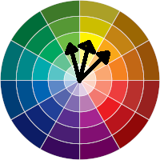
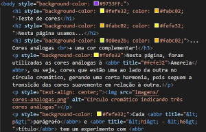
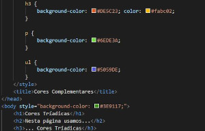

Teste de cores
Nesta página usamos...
... Cores análogas
+ uma cor complementar!
Nesta página, foram utilizadas as cores análogas à Amarela, ou seja, cores que estão uma ao lado da outra no círculo cromático, gerando uma certa harmonia, pois seguem a transição das cores suavemente em relação à outra.

Cada parágrafo e título tem um experimento com cores de fontes contrastadas com a cor de fundo da respectiva tag HTML. A cor de fundo da página será alterada para os testes.
- Inicialmente, utilizei Estilos Pontuais para as cores, alterando elas para melhor visualizar as mudanças. Porém, preferi pelos estilos internos, por questões de organização do código. Veja as imagens:
 
- A formatação da página está de forma externa, utilizando a tag <link> para indicar a folha de estilos em cascata.
- Página utilizando Cores Tríadicas.
- Página utilizando Cores Monocromáticas.